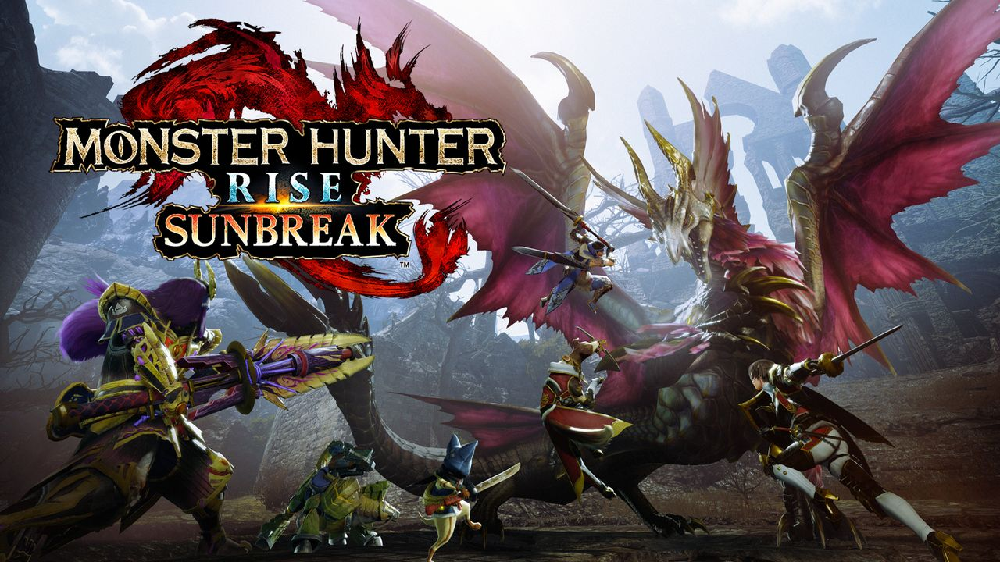
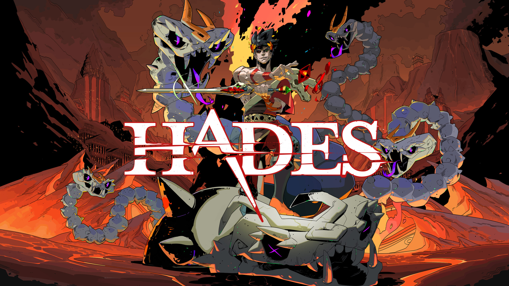

Welcome to my website. Take a look around!
Dewan's video game blog
My main hobbies are watching anime/tv shows and playing video games. Right now, some of my favorite tv shows are Castlevania and One Punch Man. I play way more video games than watching shows so I wanted to focus on just making this a video game blog. My two favorite games right now are Monster Hunter Rise and Hades. I put at least 100+ hours into each of these games. For Monster Hunter Rise, I played it on Nintendo Switch and PC so I probably put 200+ hours in it lol. Here you're going to here what I liked about these games and some things that could be better. SPOILERS are ahead.
Monster Hunter Rise
I have been a long time fan of the Monster Hunter series. I have been playing since Monster Hunter 4 which came out in 2015. The majority of each new installment really improved on the previous titles, except Monster Hunter World. While I really like Monster Hunter World (I put 300+ hours into this game), the combat felt way more weak and each weapon felt like it was missing something. Most of the other games had a gimmick like sub-species, hunter arts, hunting styles or event monsters. What Monster Hunter World did very well is that they streamlined many of the annoying and convoluted game systems which took out a lot of the frustration that other games have caused me.
What makes me really like Monster Hunter Rise is that it massively improved upon the movement, the companion customization and weapon versatility. The movement was greatly improved because they introduced a ninja-like mechanic in the game called wire-bugs where you can use these bugs to preform high jumps, scaling high walls, dodge attacks or even use wire-bug skills in combat. This feature added so much to the game because it increased the verticality of every fight. In every other game, if you wanted to jump or scale a wall, you would have to find a cliff to jump off of (no fall damage lol) or find a specific spot to climb up. But now, you can even use wire-bugs to dodge or defend attacks making the really slow weapons viable with fighting more monsters.
As for the companion customization, MH Rise added the palamute (dog) companion. Before there were just palicos (cats) that could assist you in battle, gathering, healing you and even setting up traps. Palamutes are unable to do most of these roles as effectively as palicos, but you can ride them, increasing your movement speed. If you're like me, an impatient gamer, you would really like this addition to the game. This is great when I am trying to run away from the monster because I am about to die, because monsters can always run faster than me lol.
The weapon versatility in this game is so good. Because of wire-bug techniques, each weapon now has a dodge/parry alongside a buff. Before, if I was playing a slow moving weapon, I would have to sit there and hope I could time a guard point with split second accuracy or die. Also wire-bugs add more special moves to do which makes every weapon have enough attacks that you're not always doing the same moves.
As for my complaints, MH Rise does not include some of my favorite gimmicks and has not given much of a reason to hunt apex monsters. Some of my favorite gimmicks are sub-species and apex monsters. An example of a sub-species of a monster named Zamtrios thats a 4-legged shark in the tundra that can create ice armor and swim in ice and water is Tigerstripe Zamtrios found in the desert that swims in sand. They included a very limited amount of sub-species. As for apex monsters, they are also limited in number and theres no real use to the materials you get from hunting them. In previous titles, you would hunt apex monsters to get the last few upgrades of the armor set or weapons or even special charms.
Pros
- Very good movement
- Weapon Versatility
- Verticality
- Companion customization
Cons
- Lack of variety of sub-species and apex monsters
- Complicated movement controls
Hades
Roguelike and roguelite are a few of my favorite genres of video games. The gameplay loop that they have is so satisfying to me. It mainly consists of two parts upgrading your character and weapons and testing out your new power in a dungeon crawler. It is similar to sharpening a knife. After sharpening a kitchen knife, I always want to see how cleanly it slices through vegetables. In roguelite games, you sharpen your skills and weapons and then test out how well you do in the game. Its always a good experience because if I lose to an enemy that consistently beats me, I can go upgrade myself and come back stronger and try again with a new sense of confidence.
Hades is a rougelite that does this gameplay loop so well. On Steam, I have 100% of the achievements and over 150+ hours played. Some of the aspects of the game I really like are the lore/mythology, the weapon customization, luck-based skills and character depth.
The lore and mythology of this game is a large reason for why I like it so much. I have always been interested in mythology and in this game, you play as a character that casually interacts with figures like Zeus, Hades, Poseidon and Cerberus. You can even pet Cerberus, only the left head likes being pet tho. Some interesting dynamics happen like the famous quote "All is fair in Love and War" where Aphrodite and Ares can both bless you and give you a powerful buff. In the story of the game, Demeter, the godess of agriculture, her daughter is missing. In her grief and anger, she stopped the seasonal cycle and plunged Earth into a millenium long ice age. It is really interesting how real life events like that can be represented by mythological figures acting human.
Another really cool feature of the game is the weapon customization. It also has lore based custimizations. The weapons you use are called Infernal Arms that Olympians used to defeat they're more ancient counterparts, the titans. These weapons are unique in that they take the "aspect" of their former owners, even if they haven't wielded them yet (the strings of fate knows everything). So some interesting weapons is the bow with the aspect of Rama, a hindu god, or the sword with the aspect of King Arthur. Zagreus, the character you play as, remarks that he does not know who these figures are, because maybe, they haven't even existed yet.
The luck in this game plays a huge role in how well the current run goes. If you get good luck, then the game will give you high rarity skills that do so much damage, that the final boss will not give you much trouble. It is fun because even after knowing how much I know about the game, each time I play will always have something new for me to see or a new combination of skills to use.
As talked about before, the characters in this game have a lot of depth to them. Another example is the god Dionysis, the god of wine and festivity. The way he is depicted in this game is as a college frat bro who always parties. Dionysis has a soft spot for Zagreus but it was never fully explained in the game. I had to look it up and I learned that there where some stories of Zagreus and Dionysis where the same person. Zagreus was still-born, but was resurrected and in some stories, he was reborn as Zagreus or reborn as Dionysis. This explains why Dionysis feels like Zagreus is like his "brother" because in some stories, they were the same person. So of course Zagreus is welcome to every single one of Dionysis's parties lol.
As for Hades, I don't have a pros/cons list to give, because I dont have any cons, its a good game.
Created by Dewan Singh